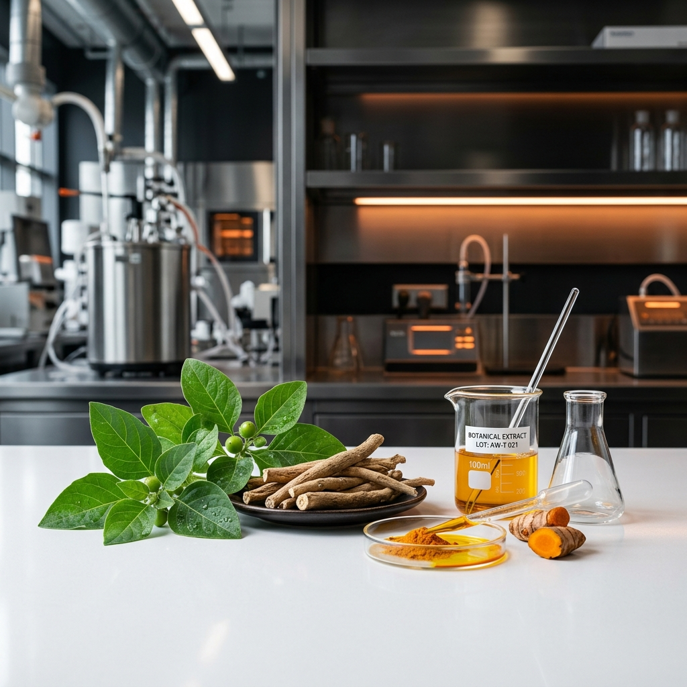

3-4 Decades of Nutrient Decline
National Institute of Nutrition (NIN) Hyderabad studies show soil toxicity has drastically reduced food nutrients over the past 30 to 40 years. This gap in daily food nutrition means reliance on diet alone is no longer enough to sustain optimal health.
The Shift to
Preventive Therapy
Modern lifestyle disorders are rising rapidly due to nutritional gaps. Relying on curative medicine after diseases set in is not a sustainable path. Targeted nutraceutical supplements are now a biological necessity for healthy living, acting as a shield for cellular regeneration and tissue repair.
At SPECMED, we design high-potency, science-backed formulas to bridge these critical nutritional gaps, moving the focus of therapy from post-disease management to active health preservation.
Our Core Therapeutic Focus
Discover how SPECMED nutraceutical solutions integrate with our primary clinical departments to support proactive care.
Gynaecology Portfolio
Nutraceuticals are increasingly used in gynaecology to manage hormone imbalances, reduce chronic pelvic pain, and support reproductive health with fewer side effects than traditional pharmaceuticals. They offer a natural, evidence-based approach to prevent and treat women's health conditions.
- • Hormonal Regulation: Supports endocrine balance and PCOS recovery.
- • Pelvic Pain Reduction: Helps naturally manage pelvic inflammation pathways.
-
•
Reproductive Health: Evidence-based support for maternity and general health.
Orthopaedics Portfolio
Nutraceuticals are used in orthopaedics to manage joint inflammation, accelerate post-surgical recovery, and support bone and cartilage health. They are increasingly used as complementary adjuncts alongside standard therapies due to their favorable safety profiles and preventative properties.
- • Joint Inflammation: Reduces cartilage degradation and swelling.
- • Post-Surgical Healing: Accelerates bone union and tissue recovery.
- • Cartilage Strength: Stimulates collagen synthesis for long-term mobility.
Bridging Ancient Wisdom with
Modern Standard Extracts
Although the term "nutraceutical" was coined in the West in 1989, the foundational principles of using food and herbs for medicinal and physiological benefits originated in India thousands of years ago. The entire premise of using natural remedies, such as turmeric, ashwagandha, and cloves, to boost immunity aligns directly with modern nutraceutical practices.
SPECMED Life Sciences bridges this gap. By utilizing modern pharmaceutical expertise, we adopt standards such as clinical validation, high-quality botanical extracts, and advanced dosage forms to deliver reliable, evidence-based preventive therapies.

Targeted Prevention for
Core Medical Segments
SPECMED Life Sciences Private Limited is a fast-growing pharmaceutical company based in India. We aim to positively impact the health of more people by the end of 2030 in the critical segments of Orthopaedics, Gynaecology, Critical Care, and General Medicine.
Our formulations leverage advanced clinical research to manage joint inflammation, support bone and cartilage health, regulate hormone imbalances, reduce pelvic pain, and provide elemental amino-acid support in critical care, offering a natural, evidence-based approach to prevention and care.